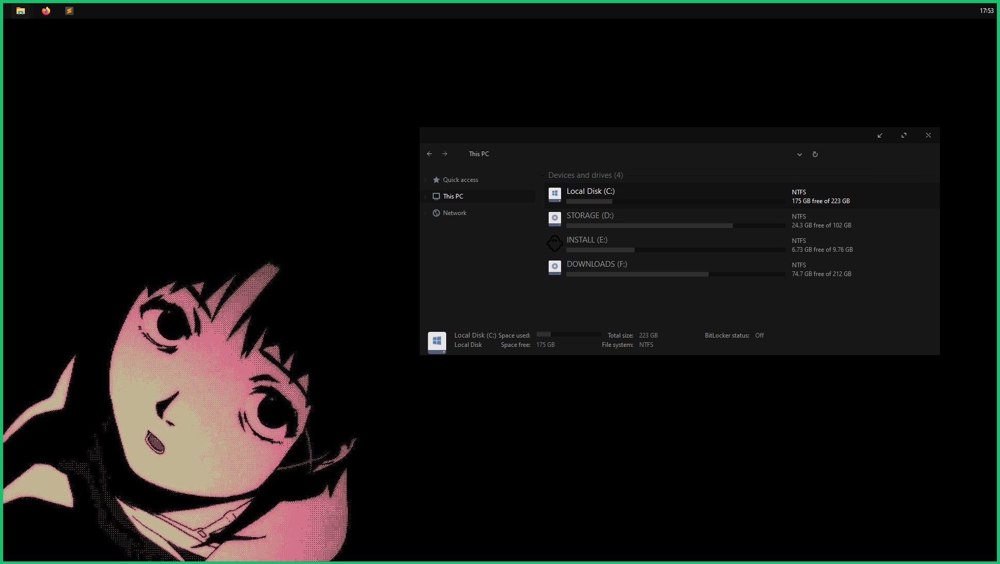
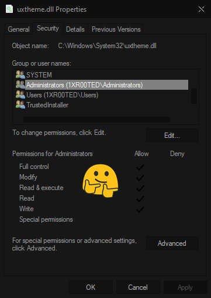
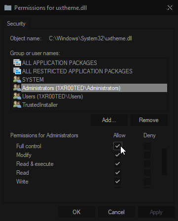
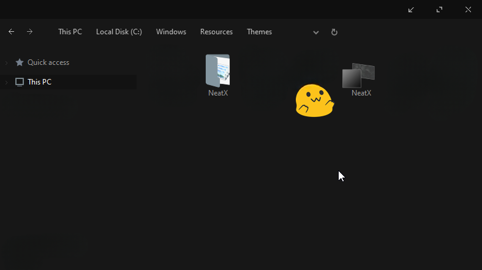
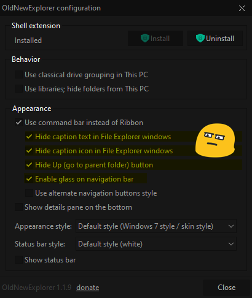

Windows.
- Тема Neat X + Hemis icons
Download Neat Theme .zip Download Hemis icons .zip  - Установка темы
Скачать и Установить UltraUXThemePatcher если файлы после установки
not patchedзайти в 🐛c:\windows\system32🐛 и выдать admin права этим фалам -->uxtheme.dll, UXInit.dll, themeui.dll
  - Распаковать Neat.zip в
c:\windows\resources\themesи выбрать тему.
 - Установка иконок
Из 7tsp+Hemis.zip достать 7tsp hemis grey.7z (его не распаковавать)
Запустить 7tsp GUI.exe

Выбрать 7tsp hemis grey.7z и нажать Start Patching 🌈 - Скачать и Запустить OldNewExplorer.zip и нажать Install
